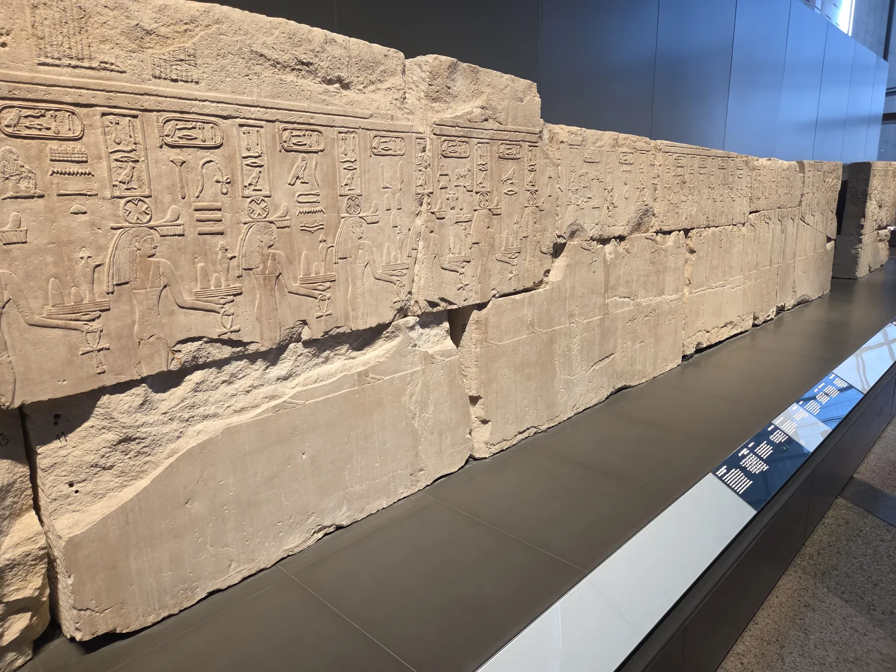
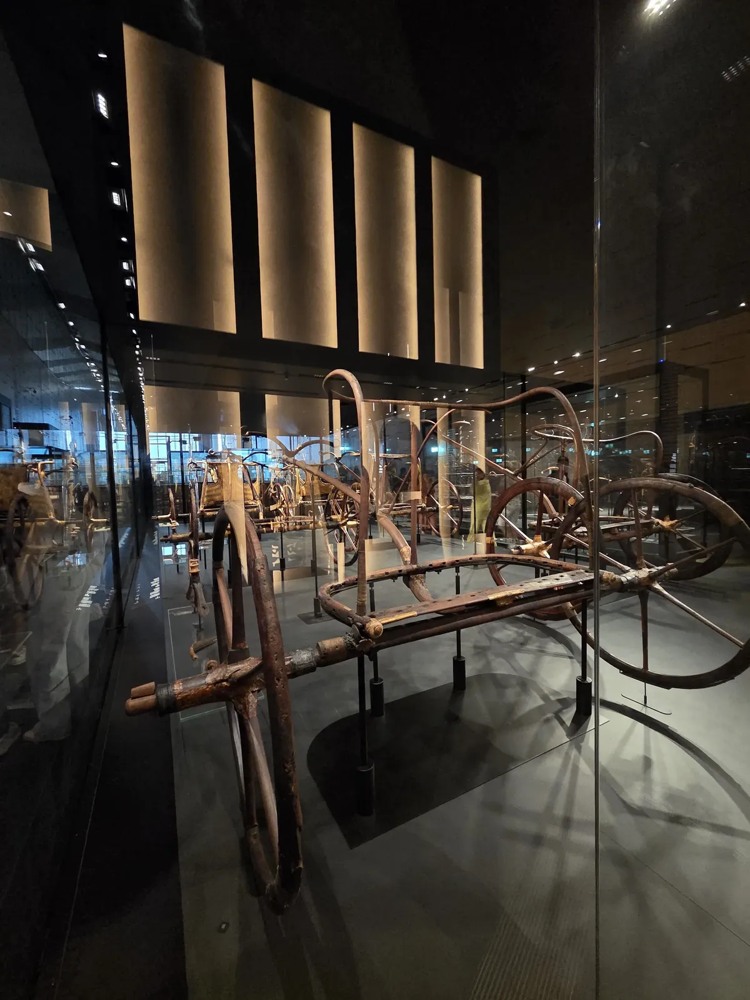
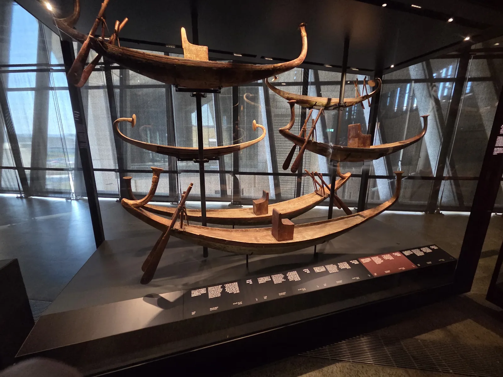
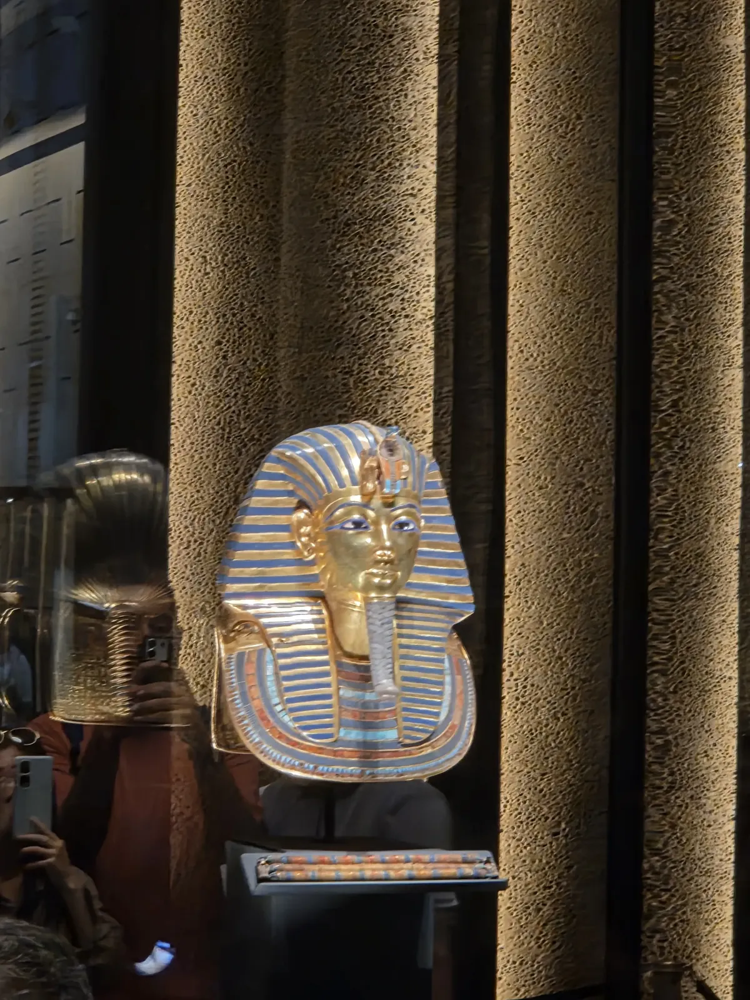
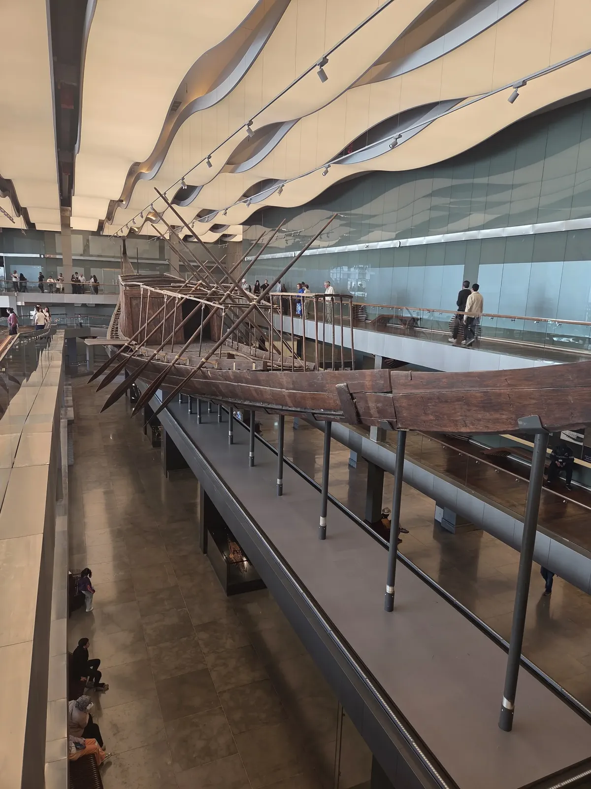

Le GEM se dresse à quelques centaines de mètres des pyramides de Gizeh, dans une architecture titanesque qui annonce la démesure de ce qu'on trouve à l'intérieur. 100 000 m² d'exposition, 100 000 objets dont la totalité du trésor de Toutânkhamon. On y entre avec de grandes attentes et on en ressort écrasé — dans le bon sens du terme.
Billets, horaires et accès
| Élément | Tarif | Notes |
|---|---|---|
| Billet standard | 1 000 LE (~17 €) | Accès aux collections permanentes |
| Salle des momies royales | 300 LE (~5 €) | Incluse ou supplément selon le forfait |
| Trésor de Toutânkhamon | Inclus dans le billet standard | Galerie dédiée au 1er étage |
| Parking | Gratuit | Vaste parking devant le musée |
| Guide officiel sur place | 400–600 LE (~7–10 €) | Optionnel mais recommandé pour les grandes salles |
Tarifs observés en avril 2026. 1 € = 60 LE.
Horaires : ouvert tous les jours de 9h à 17h (dernière entrée à 16h). En haute saison, arriver avant 10h pour éviter les groupes.
Accès : le GEM se trouve sur la route des Pyramides (Pyramids Road), à environ 40 min du centre du Caire en taxi. Uber fonctionne. Prévoir ~150–200 LE (~3 €) depuis le centre.
Pour le reste des incontournables du Caire, voir notre guide complet du Caire.
Les collections incontournables
Le trésor de Toutânkhamon
Le GEM abrite la totalité des objets découverts dans la tombe de Toutânkhamon par Howard Carter en 1922 — soit plus de 5 000 pièces. La galerie dédiée occupe une aile entière du premier étage. Le trône doré, les chars de guerre, les cercueils emboîtés, les vases canopes... tout est là, dans un espace scénographié avec soin. C'est la collection la plus complète et la mieux présentée de tous les musées égyptiens.

Les grandes statues
Le hall d'entrée et les grandes galeries abritent des colosses de Ramsès II et d'autres pharaons. L'effet de taille est saisissant — certaines statues font plusieurs mètres de haut.

La salle des momies royales (Royal Mummies Hall)
Salle dédiée aux momies de pharaons et de grandes figures de l'Égypte ancienne. L'ambiance est solennelle, la présentation sobre et respectueuse. C'est l'une des expériences les plus fortes du musée.
Comment organiser sa visite
- Réserver les billets en ligne si possible — les files peuvent être longues en haute saison
- Prévoir au minimum une demi-journée (3h) ; une journée entière pour tout voir
- Commencer par la galerie Toutânkhamon au premier étage avant l'afflux des groupes
- Apporter de l'eau — le musée est climatisé mais les distances sont longues
- Combiner avec les Pyramides le même jour — elles sont à 10 minutes à pied du musée

GEM ou Musée Égyptien du Tahrir — lequel choisir ?
| Critère | GEM | Musée du Tahrir |
|---|---|---|
| Collections | 100 000 objets, tout Toutânkhamon | ~120 000 objets, présentation ancienne |
| Scénographie | Moderne, éclairage soigné | Vieillissante, certaines salles mal éclairées |
| Localisation | Route des Pyramides | Place Tahrir, centre du Caire |
| Billet | ~17 € | ~5 € |
| Foule | Moins dense (nouveau) | Très fréquenté |
| À privilégier si… | Toutânkhamon + expérience muséale | Budget serré + accès centre-ville |
Les deux musées valent la visite si le temps le permet. Le GEM s'impose pour Toutânkhamon.
Notre guide du Caire détaille les deux musées et les autres sites incontournables.

Pour visiter le GEM avec un guide francophone ou en excursion depuis le centre du Caire, consultez les options disponibles sur GetYourGuide.
Questions fréquentes
Combien coûte l'entrée au Grand Musée Égyptien ?
Le billet standard pour le GEM coûte 1 000 LE (~17 €) en 2026. L'accès à la salle de la momie royale (Royal Mummies Hall) est inclus dans certains forfaits ou vendu séparément (300 LE). Des réductions existent pour les étudiants avec carte internationale.
Combien de temps faut-il pour visiter le GEM ?
Comptez au minimum 3 heures pour une visite sérieuse des collections principales. Une journée entière est nécessaire pour voir l'intégralité du musée. La plupart des voyageurs consacrent une demi-journée (3 à 4h) en se concentrant sur la galerie de Toutânkhamon et les grandes salles.
Faut-il réserver les billets du GEM à l'avance ?
La réservation en ligne est recommandée en haute saison (octobre à avril) pour éviter les files d'attente. En dehors de ces périodes, les billets sont disponibles sur place. Le site officiel permet la réservation via egypt.travel ou les plateformes d'excursions.
Le GEM est-il ouvert tous les jours ?
Le Grand Musée Égyptien est ouvert 7j/7, généralement de 9h à 17h. Vérifiez les horaires exacts avant votre visite car ils peuvent varier selon les saisons et les jours fériés égyptiens.

Le GEM fait partie des incontournables du Caire. Retrouvez tous nos conseils dans notre guide complet de la ville : Pyramides, Saqqara, Khan el-Khalili et plus encore.